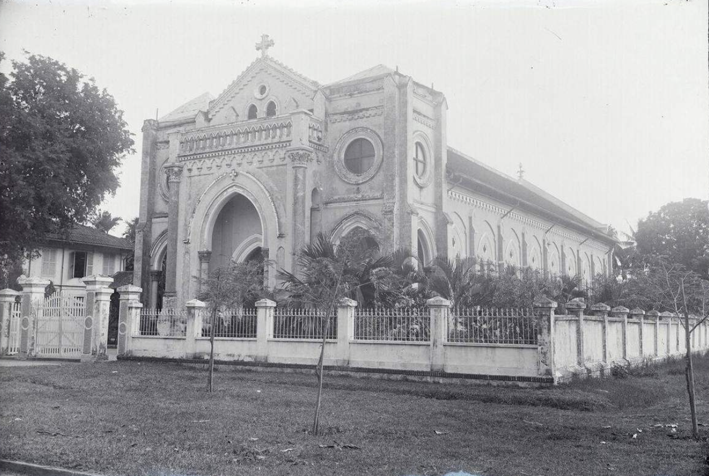

Giáo xứ Chánh Tòa Mỹ Tho, với tước hiệu Đức Mẹ Vô Nhiễm, là trung tâm thiêng liêng của Giáo phận Mỹ Tho, tọa lạc tại số 32 Hùng Vương, phường 1, thành phố Mỹ Tho, tỉnh Tiền Giang. Lịch sử giáo xứ bắt đầu từ năm 1861, khi cộng đoàn Công giáo đầu tiên được hình thành từ những tín hữu bị giam cầm, nhờ ơn Chúa và gương sống của thánh Phêrô Lựu. Đến năm 1876, Đức cha Colombert đã thánh hiến nhà thờ Vĩnh Tường, dâng kính Thánh Tâm Chúa Giêsu. Sau đó, ngày 11 tháng 8 năm 1906, dưới sự hướng dẫn của cha Régnier (Gẫm), ngôi thánh đường hiện tại được khởi công và hoàn thành vào năm 1910. Ngày 24 tháng 11 năm 1960, Đức Giáo hoàng Gioan XXIII ban hành Sắc chỉ Venerabilium Nostrorum, thành lập Giáo phận Mỹ Tho, tách khỏi Tổng Giáo phận Sài Gòn, và nâng nhà thờ này lên hàng Chánh Tòa.
Thánh đường Chánh Tòa Mỹ Tho mang phong cách Romanesque, với chiều cao 24m, dài 53m, rộng 17m, gồm một gian chính và hai gian phụ. Công trình được xây trên nền đất sình, nên chiều cao được điều chỉnh để đảm bảo an toàn, nhờ ơn Chúa soi sáng. Cột tròn chống đỡ mái vòm, được trang trí bằng hoa văn tinh xảo, phản ánh nét đẹp nghệ thuật Công giáo. Các cửa sổ kính màu mô tả các mầu nhiệm Chúa Giêsu và Đức Mẹ, tỏa ánh sáng thánh thiêng, giúp cộng đoàn sống đạo sâu sắc. Sàn lát gạch bông thủ công, giữ gìn dấu ấn thời kỳ đầu thế kỷ 20, là minh chứng cho sự bền vững của đức tin.

Chánh Tòa Mỹ Tho là nơi cử hành các Thánh Lễ trọng đại như Giáng Sinh, Phục Sinh, và lễ tấn phong giám mục. Giáo xứ tổ chức lớp giáo lý cho thiếu nhi, thanh niên, và người lớn, giúp nuôi dưỡng đức tin. Các hoạt động bác ái, như phát gạo và học bổng cho người nghèo, được thực hiện thường xuyên, thể hiện tinh thần yêu thương của Chúa. Hội Legio Mariae và các đoàn thể khác tụ họp, xây dựng cộng đoàn hiệp nhất. Với hơn 3.600 giáo dân (tính đến 2017), nơi đây là điểm tựa thiêng liêng cho toàn giáo phận.

Năm 2006, dưới sự dẫn dắt của cha Giacôbê Hà Văn Xung, giáo xứ khởi sự trùng tu thánh đường, nhân kỷ niệm 100 năm thành lập. Công việc bao gồm mở rộng hai gian phụ, sửa tháp chuông, và gia cố phần hư hỏng, giữ nguyên nét kiến trúc Gothic cổ kính. Hoàn thành vào năm 2007, dự án này là lời tạ ơn Chúa, đảm bảo thánh đường tiếp tục là nơi cầu nguyện và sinh hoạt cộng đoàn. Các hoạt động bảo tồn định kỳ được thực hiện để lưu truyền di sản đức tin cho thế hệ mai sau.
Đức Cha Phê-rô Nguyễn Văn Khảm, sinh ngày 2 tháng 10 năm 1952 tại Hà Đông, được thụ phong linh mục ngày 31 tháng 8 năm 1980 tại Tổng Giáo phận Sài Gòn. Ngài làm Giám mục phụ tá TP.HCM từ 2008, rồi được bổ nhiệm làm Giám mục Chánh Tòa Mỹ Tho ngày 26 tháng 7 năm 2014. Với khẩu hiệu “Hãy theo Thầy” (Ga 21:22), ngài hướng dẫn giáo phận bằng bài giảng sâu sắc, chú trọng giáo dục đức tin và hỗ trợ tu sĩ, là ánh sáng Chúa soi dẫn cho giáo dân.

Cha sở Giacôbê Hà Văn Xung, linh mục chánh xứ từ nhiều năm, tận tụy phục vụ giáo dân với lòng mến Chúa. Thụ phong năm 1990, ngài dẫn dắt trùng tu thánh đường năm 2006, mở rộng không gian và nâng cấp tháp chuông, hoàn thành năm 2007. Ngài tổ chức lớp giáo lý, cầu nguyện, và bác ái, là cầu nối giữa giáo dân và Đức Cha, xây dựng cộng đoàn vững mạnh trong đức tin.
Chánh Tòa Mỹ Tho không chỉ là nơi cử hành Thánh Thể mà còn là di sản đức tin, phản ánh sự giao thoa văn hóa Việt-Pháp. Các nghi lễ như kính Đức Mẹ Vô Nhiễm và lễ thánh du năm 1972 để lại dấu ấn sâu đậm. Nơi đây là điểm hành hương, nơi giáo dân tìm ơn Chúa, sống mến Chúa yêu người, và là ngọn hải đăng đức tin cho miền Tây.


Đức Cha Phê-rô Nguyễn Văn Khảm, sinh ngày 2 tháng 10 năm 1952 tại Hà Đông, được thụ phong linh mục ngày 31 tháng 8 năm 1980 tại Tổng Giáo phận Sài Gòn. Ngài làm Giám mục phụ tá TP.HCM từ 2008, rồi được bổ nhiệm làm Giám mục Chánh Tòa Mỹ Tho ngày 26 tháng 7 năm 2014. Với khẩu hiệu “Hãy theo Thầy” (Ga 21:22), ngài hướng dẫn giáo phận bằng bài giảng sâu sắc, chú trọng giáo dục đức tin và hỗ trợ tu sĩ, là ánh sáng Chúa soi dẫn cho giáo dân.

Cha sở Giacôbê Hà Văn Xung, linh mục chánh xứ từ nhiều năm, tận tụy phục vụ giáo dân với lòng mến Chúa. Thụ phong năm 1990, ngài dẫn dắt trùng tu thánh đường năm 2006, mở rộng không gian và nâng cấp tháp chuông, hoàn thành năm 2007. Ngài tổ chức lớp giáo lý, cầu nguyện, và bác ái, là cầu nối giữa giáo dân và Đức Cha, xây dựng cộng đoàn vững mạnh trong đức tin.
Đức Cha Phê-rô Nguyễn Văn Khảm và Cha Sở Giacôbê Hà Văn Xung cùng nhau dẫn dắt Giáo xứ Chánh Tòa Mỹ Tho với tinh thần hiệp thông. Đức Cha định hướng mục vụ cho toàn giáo phận, trong khi Cha Sở quản lý trực tiếp giáo xứ, tổ chức các Thánh Lễ, lớp giáo lý, và hoạt động bác ái. Sự phối hợp này giúp giáo xứ không chỉ là nơi cử hành Thánh Thể mà còn là trung tâm thiêng liêng, nơi giáo dân tìm thấy ơn Chúa và sống đời Kitô hữu đích thực.